DESIGN PROCESS

LEARN ABOUT MY CREATIVE PROCESS
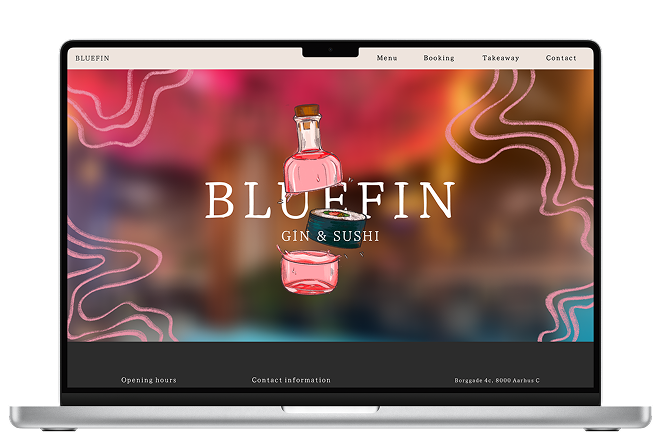
Have you ever wished you could escape your routine and feel like you’re somewhere completely different, without the stress, crowds, and constant city noise? Finding those peaceful, unique spots isn’t always easy, especially in one of the world’s busiest and most tourist-packed cities. You want somewhere relaxing, affordable, close by, and ideally, a place where animals add a little extra joy to the experience.
People living in or visiting London often want to escape the busy city atmosphere and find somewhere peaceful, affordable, and a little different. However, discovering unique places away from the usual tourist attractions, especially spots where they can enjoy the company of animals, can be difficult and time-consuming.
I started with desk research and interviews with eight people to understand how people choose places to visit, what they look for when planning an outing, and what they value when it comes to animals and experiences.
I used a mind map to organise my initial ideas and created a persona based on the research to keep the target user in mind throughout the project.
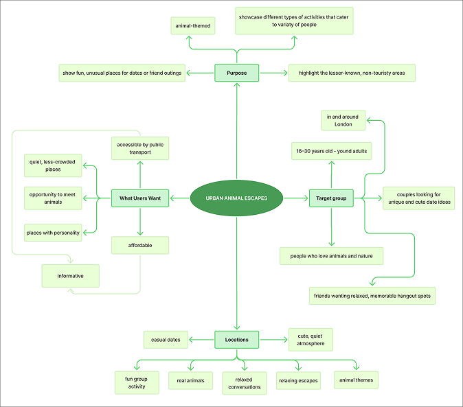
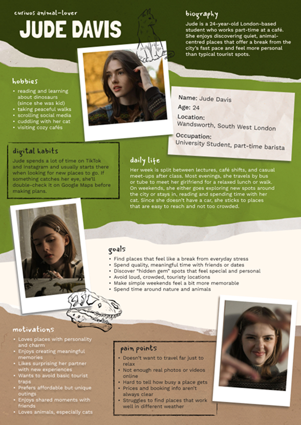
From the research, I used an affinity diagram and empathy map to find patterns in the research and better understand the users' needs, motivations and frustrations. I identified key values such as relaxation, companionship, curiosity, comfort and feeling invited. These helped shape the direction of the website and define what information and features it needed.
I then created a Value Proposition Canvas, defined the key user values and requirements, and used a site map and OOUX to structure the website's content and features.
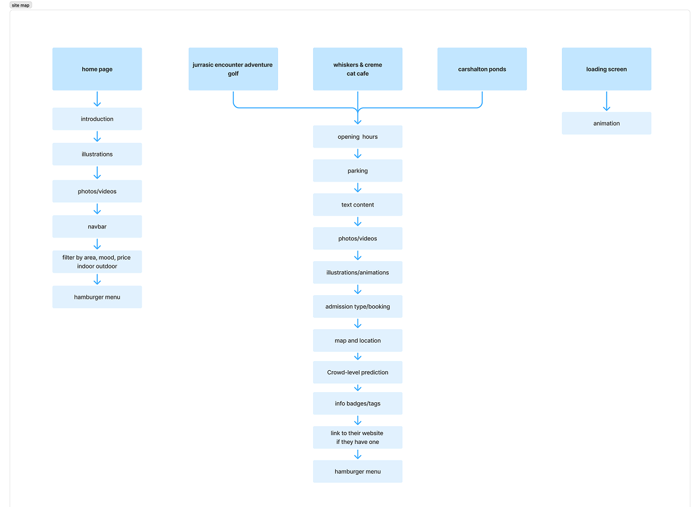
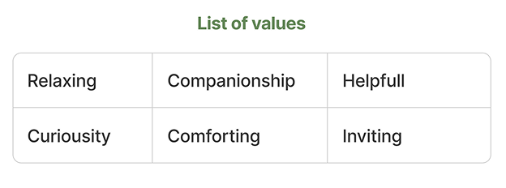
I started exploring the visual direction with a design mind map and moodboard.
My first ideas were more colourful and playful, but I eventually moved towards muted, nature-inspired colours, soft textures and a scrapbook aesthetic to create a calmer and more personal feeling.
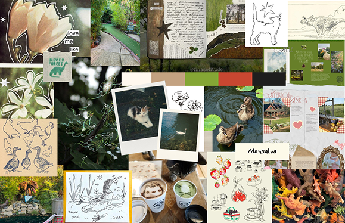
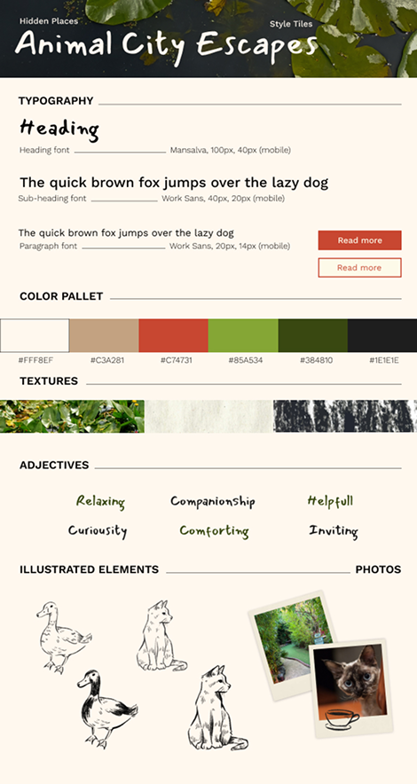
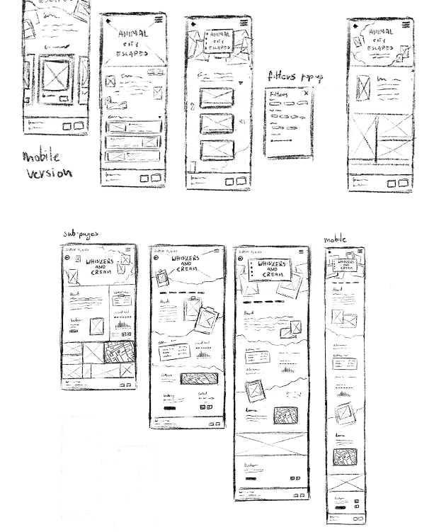
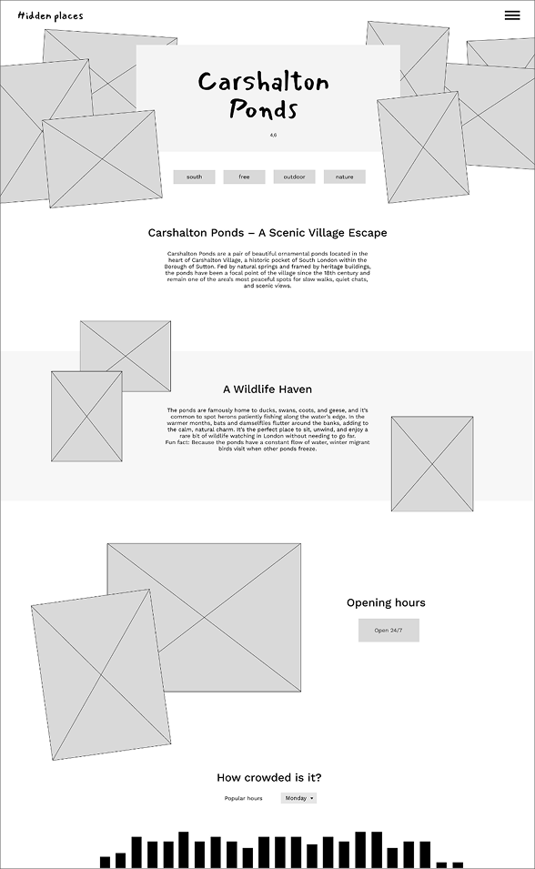
I then created style tiles to explore typography, colours and the overall visual language. From there, I moved into sketching, exploring different layouts, cards, filters and decorative elements before developing the strongest ideas into low-fidelity wireframes for both desktop and mobile.

I created six testing scenarios based on the persona's pain points and used them to test the high-fidelity prototype. The feedback led to several small changes, including improving the navigation and fixing content issues.
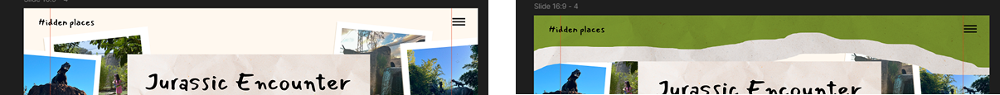
At the beginning of the project, I realized that although London offers many unique and peaceful places, these locations are often difficult to discover and easily overlooked within the city’s fast-paced environment. Interviews and field research confirmed that users wanted clearer information, trustworthy recommendations, and intuitive navigation.
In the end, my prototype achieves the main goal of the project: making animal-focused urban escapes in London more visible, approachable, and enjoyable for both locals and visitors looking for moments of calm within the city.
My final prototype delivers a cohesive and accessible digital experience across mobile and desktop, reflecting the key values identified during my research: relaxation, curiosity, companionship, comfort, and invitation. The visual language and interaction design work together to create an experience that feels calm, engaging, and easy to navigate.
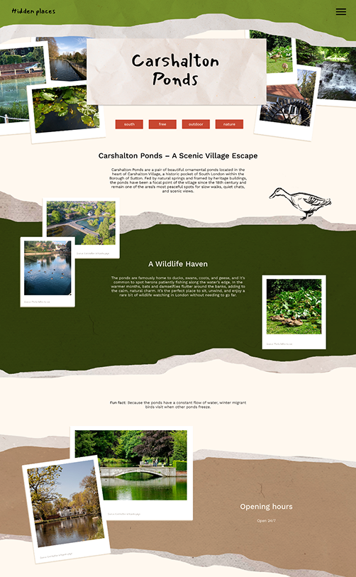
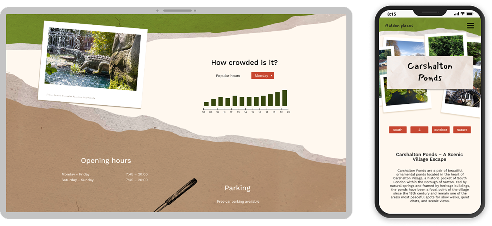